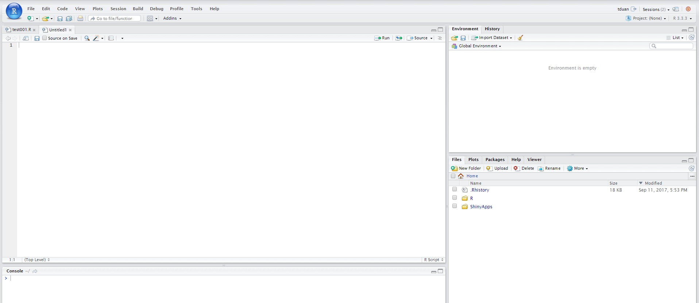

Chapter 1 Introduction
In this chapter,will share the history of analytic software ,how to install R,R studio and introduce the most important concept in R - package.
1.1 History of analytic software
R: is an implementation of the S programming language and created by Ross Ihaka and Robert Gentleman. at the University of Auckland, New Zealand.R is named partly after the first names of the first two R authors and partly as a play on the name of S. The project was conceived in 1992, with an initial version released in 1995 and a stable beta version in 2000.
S : is a statistical programming language developed primarily by John Chambers at Bell Laboratories in 1975.
Python: is created by Guido van Rossum in 1991.Python 3.0 was released on 2008.
SQL: Structured Query Language[SQL] was initially developed at IBM by Donald D. Chamberlin and Raymond F. Boyce in 1970.
MATLAB: Cleve Moler, the chairman of the computer science department at the University of New Mexico, started developing MATLAB in the late 1970.
SAS: The development of SAS began in 1966 at North Carolina State University by Anthony Barr and his student James Goodnight(current CEO of SAS).
library(plotly)
google_trend<- read.csv("./data/multiTimeline001.csv", header=TRUE,skip=1)
p <- plot_ly(google_trend, x = ~Week, y = ~R...Worldwide.,name = 'R', type = 'scatter', mode = 'lines')%>%
add_trace(y = ~SQL...Worldwide., name = 'SQL', mode = 'lines')%>%
add_trace(y = ~Python...Worldwide., name = 'Python', mode = 'lines')%>%
layout(title = "Past 5 years Google Trends",
xaxis = list(title = "Date"),
yaxis = list (title = "Interest"))
p1.2 Install R and RStudio
R is a free software environment for statistical computing and graphics.Download R at CRAN:www.r-project.org
CRAN stand for The Comprehensive R Archive Network. It is a network of ftp and web servers around the world that store identical, up-to-date, versions of code and documentation for R.
CRAN is maintained by the efforts of volunteers (the ‘CRAN team’).That is a group of talent who contribute their time and expertise to make better Package
RStudio is an integrated development environment (IDE) for R. It includes a console, syntax-highlighting editor that supports direct code execution, as well as tools for plotting, history, debugging and workspace management.
Download R Studio:www.rstudio.com
1.3 Software navigation
1.3.1 R

1.3.2 Rstudio

1.3.3 Rstudio server
Rstudio server pro is able to run multi R section at the same time

Rstudio server display 
1.4 R Version , working location and computer environment
Check R version:
version## _
## platform x86_64-w64-mingw32
## arch x86_64
## os mingw32
## system x86_64, mingw32
## status
## major 3
## minor 5.1
## year 2018
## month 07
## day 02
## svn rev 74947
## language R
## version.string R version 3.5.1 (2018-07-02)
## nickname Feather SprayUpdate R version run:
install.packages("installr")
library(installr)
updateR()Get current working :
getwd()## [1] "C:/Users/User/Desktop/Mission/R/Bookdown/Get_R"Set current working loaction:
setwd("C:/Users/User/Desktop/Mission/R/R_code/Get_R/Book")1.5 R Package
Part of the reason R has become so popular is the vast array of packages available at the CRAN.In the last few years, the number of packages has grown exponentially!
Untill Aug 2017, the CRAN package repository features 11288 available packages.
R language itself is just the glue,thandsands of usefully packages from the world is the key to make the great R ecosystem.Each package consist of method,function and data to tackle a specific problem.
In order to use a package.we need to first download it and then load the package.
Install a package from CRAN:
install.packages('ggplot2')load a package:
libray(ggplot2)Package on CRAN are been verified and tested by CRAN Team. Be careful when you need to download Package from other sources.
Install a package from Github(NOT recommended):
install.packages("devtools")
library(devtools)
devtools::install_github("rstudio/bookdown")Install a package from Github zip file (NOT recommended):
# unzio zip file
unzip("mongolite-master.zip")
# rename
file.rename("mongolite-master", "mongolite")
# build tar.gz file
shell("R CMD build mongolite")
# install package from tar.gz file
install.packages("mongolite_2.0.tar.gz", repos = NULL)
library(mongolite)Get help on Package: question mark follow by package name
?ggplot2Uninstall packages:
library(installr)
uninstall.packages(c("reshape",'plyr'))Check R installed packages location:
.libPaths()## [1] "C:/Users/User/Documents/R/win-library/3.5"
## [2] "C:/Program Files/R/R-3.5.1/library"Popluar Package:
ggplot2:ggplot2 is a plotting system for R, based on the grammar of graphics.
dplyr:dplyr provides a grammar of data manipulation, providing a consistent set of verbs that solve the most common data manipulation challenges.
tidyr:tidyr provides a set of functions that help you get to tidy data.
readr:readr provides a fast and friendly way to read rectangular data (like csv, tsv, and fwf).
tibble:tibble is a modern re-imaginging of the data frame, keeping what time has proven to be effective, and throwing out what it has not. Tibbles are data.frames that are lazy and surly.
readxl:The readxl package makes it easy to get data out of Excel and into R.